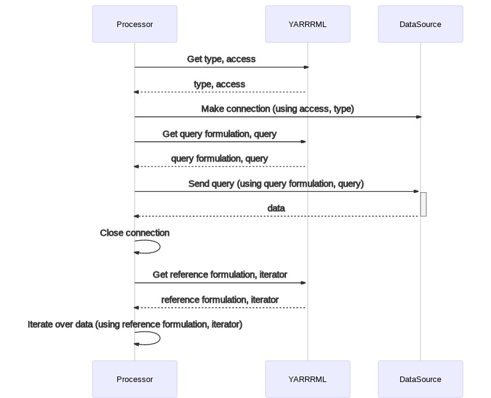

YARRRML (pronounced /jɑɹməl/) is a human readable text-based representation for declarative generation rules.
It is a subset of [YAML],
a widely used data serialization language designed to be human-friendly.
Status of This Document
This document is draft of a potential specification. It has no official standing of
any kind and does not represent the support or consensus of any standards organisation.
1. Terminology
subject
the subject of an RDF triple
predicate
the predicate of an RDF triple
object
the object of an RDF triple
class
the type of an entity
datatype
the type of a literal value
reference
the reference to a data fraction in a data source
function
a programmatic function that takes 0 or more input parameters and returns a single result
2. Profiles
This specification includes the following main profiles for tools that process YARRRML documents:
R2RML: applies the semantics specified by [R2RML];
RML: applies the semantics specified by [RML]; and
A base IRI can be defined.
This IRI will be used for the creation of the IRIs of the term maps and sources of the [R2]RML rules.
A base IRI can be added by adding key base with as value the IRI itself to the root of the document.
In the following example the base IRI is set to http://mybaseiri.com#.
Example 1: base IRI
base: http://mybaseiri.com#
4. Prefixes and namespaces
A set of prefixes and namespaces are predefined by default in every YARRRML document.
There are the same as the predefined prefixes for RDFa.
Custom prefixes can be added by adding the collection prefixes to the root of the document.
Each combination of a prefix and namespace is added to this collection as a key-value pair.
In the following example two prefixes are defined: ex and test.
The authors of the YARRRML rules can be added via the key authors.
The value is an array with an object for each author.
Each author can have the following keys:
authors:
- John Doe <john@doe.com>
- Jane Doe (https://janedoe.com)
Example 6: mapping with multiple authors
:Rules a void:Dataset;
void:exampleResource <#TM>; # linking all Triples Maps
dcterms:contributor [
a foaf:Person;
rdfs:label "John Doe";
foaf:mbox <mailto:john@doe.com>
], [
a foaf:Person;
rdfs:label "Jane Doe";
foaf:homepage <https://janedoe.com>>
].
In the case that authors have a WebID, it can be used instead of providing the name, email and so on.
In the following example the same two authors are added via their WebIDs.
:Rules a void:Dataset;
void:exampleResource <#TM>; # linking all Triples Maps
dcterms:contributor [
a foaf:Person;
rdfs:label "John Doe";
foaf:mbox <mailto:john@doe.com>
].
6. Template
A template contains 0 or more constant strings and 0 or more references to data in a data.
References are prefixed with $( and suffixed with ).
For example, foo is a template with one constant string.
$(id) is a template with one reference to id.
foo-$(id) is a template with one constant string foo- and one reference to id.
7. Data sources
The data sources are defined in the sources collection in the root of the document.
Each source is added to this collection via a key-value pair.
The key has to be unique for every source.
The value is a collection with the keys described below.
7.1 Keys
type
Type of the data source.
Required profiles: RML.
Datatype: string.
access
Local or remote location of the data source.
Required profiles: RML.
Datatype: string.
credentials
Credentials required to access the data source.
Required profiles: RML.
Datatype: collection.
queryFormulation
Query formulation used to query the data source.
Required profiles: RML or R2RML.
Datatype: string.
query
Query to execute on the data source to retrieve the desired data.
Required profiles: RML or R2RML.
Datatype: string.
encoding
Encoding used by the data.
Required profiles: RML and CSVW.
Datatype: string.
delimiter
Delimiter to separate fields in a record.
Required profiles: RML and CSVW.
Datatype: string.
contentType
Content type to expect expressed as MIME types.
Required profiles: RML and WOT.
Datatype: string.
operationType
Indicates the operation type of the Web of Things description.
Required profiles: RML and WOT.
Datatype: string.
referenceFormulation
Reference formulation used to access the data retrieved from the data source.
Required profiles: RML.
Datatype: string.
iterator
Path to the records over which to iterate.
Required profiles: RML.
Datatype: string.
7.2 Type
This key's value describes what type of data source is used,
so that the correct way of connecting to the data source can be determined.
By default a local file is assumed when the access value is a path such as file.json.
The value of type is then implicitly localfile.
By default a remote file is assumed and retrieved via an HTTP GET when a URL is given such as http://example.org/file.json.
The value of type is then implicitly remotefile.
The following values are supported:
R2RML rules do not include this information:
it is supplied directly to the used R2RML processor.
Also, it does not support SPARQL endpoints, local files, and remote files.
7.3 Access
This key's value describes where the data source can be accessed.
Examples are file.json and http://example.org/my/db.
7.4 Query formulation
Query formulations define what type of query is used query to a data source.
This key's supported values are the same as the values for the type,
together with the additional values below.
Therefore, if only a type is provided the query formulation is implicitly the same.
But if you want for example to use a MySQL query with an Oracle Database,
then you need to specify both the type and the query formulation.
In the case of SPARQL endpoints, defined by the value sparql for type,
the query formulation is by default sparql11: the data sources are queried
via a SPARQL 1.1 query.
This key's value is a query that conforms the selected query formulation.
For example, if the query formulation is mysql, then
the value of query needs to be a valid MySQL query.
7.6 Reference formulation
Reference formulations define how to access the data retrieved from the data source.
For example, this retrieved data can be query results coming from a database or
a JSON file on the local file system.
The value of this key is a string.
This key's supported values are.
This key's value defines what records are processed.
It has to conform to the selected reference formulation.
Consider the following JSON example with an array of two people.
One person is one record.
{
"people": [
{...},
{...}
]
}
To iterate over all the people,
the iterator is $.people[*] when using jsonpath as a reference formulation.
If no iterator is provided,
it is unclear what the records are.
7.8 Delimiter
This key's value defines the delimiter when working with CSV files.
The default is ,.
7.9 Encoding
This key's value defines the encoding of the retrieved data.
The default is utf-8.
7.10 Credentials
Credentials are provided when accessing a data source requires authentication.
This key's value is a collection with the keys described below.
username
User name required to access the data source.
Required profiles: RML and D2RQ.
password
Password required to access the data source.
Required profiles: RML and D2RQ.
7.11 Content type
This key's value defines the content type of the retrieved data with a MIME type.
7.12 Operation type
This key's value defines the operation type for the Web of Things description.
Operation
Value
Operation type
Retrieve data from Web API or stream
read
td:readproperty
Push data to Web API or stream
write
td:writeproperty
7.13 Security
Web of Things Security description to describe how authentication
should be performed againast a Web API or stream when accessing its data.
Security
Value
Web of Things Security scheme
Security through API key
apikey
wotsec:APISecurityScheme
type
Security scheme to apply.
Required profiles: RML and WOT.
in
Where to store the security information when performing authentication against a Web API or stream.
Required profiles: RML and WOT.
name
Name of the property holding the private security information such as API key.
Required profiles: RML and WOT.
value
Value of the property holding the private security information such as API key.
Required profiles: RML and WOT.
7.14 Query formulation vs reference formulation

In the figure above, you find a sequence diagram showing at what point the query and query formulation are used and
a what point the iterator and reference formulation are used.
The component "Processor" represents the software application that executes the converted YARRRML rules,
e.g., RML rules.
For clarity, this conversion is not included in the figure.
The processor gets the type and access from the YARRRML rules.
It uses this information to create a connection with the data source.
Next, the processor gets the query formulation and query.
It uses this information to query the desired data from the data source,
making use of the earlier created connection.
Once the data is retrieved the connection is closed.
The processor gets the reference formulation and iterator.
It uses this information to iterate over the retrieved data.
In the figure above, you find a sequence diagram showing an example of
the use of query, query formulation, iterator, and reference formulation.
The data source is a SPARQL endpoint, available at http://example.org/sparql,
which is queried using a SPARQL 1.1 query.
The query formulation is sparql11 and
the query is SELECT * WHERE{?s ?p ?o}
The result is an XML document which is iterated upon using the iterator /sparql/results/result
that conforms to the XPath specification.
7.15 Examples
In the following example a single data source is defined person-source.
<#LogicalSource> a rml:LogicalSource;
rml:source "data/person.json";
rml:referenceFormulation ql:JSONPath;
rml:iterator "$".
The collection is replaced with an array where
the first element contains the value for access appended with the ~ and the value for referenceFormulation, and
the second element contains the iterator.
The following mapping access a SQL database and select the required data via a query.
mapping:
person:
sources:
access: http://localhost/example
type: mysql
credentials:
username: root
password: root
queryFormulation: sql2008
query: |
SELECT DEPTNO, DNAME, LOC,
(SELECT COUNT(*) FROM EMP WHERE EMP.DEPTNO=DEPT.DEPTNO) AS STAFF
FROM DEPT;
referenceFormulation: csv
Example 16: mapping with database as source
<#TriplesMap> a rr:TriplesMap;
rml:logicalSource [
a rml:LogicalSource;
rml:source <#DataSource>;
rr:sqlVersion rr:SQL2008;
rml:query "SELECT DEPTNO, DNAME, LOC,
(SELECT COUNT(*) FROM EMP WHERE EMP.DEPTNO=DEPT.DEPTNO) AS STAFF
FROM DEPT;";
rml:referenceFormulation ql:CSV
].
<#DataSource> a d2rq:Database;
d2rq:jdbcDSN "jdbc:mysql://localhost/example";
d2rq:jdbcDriver "com.mysql.jdbc.Driver";
d2rq:username "root";
d2rq:password "root" .
8. Targets
8.1 Keys
type
Type of the target.
Required profiles: RMLT.
Datatype: string.
access
Local or remote location of the target.
Required profiles: RMLT.
Datatype: string.
serialization
Serialization format to use when exporting to the target.
Required profiles: RMLT and FORMATS.
Datatype: string.
ompression
Compression algorithm to use when exporting to the target.
Required profiles: RMLT and COMP.
Datatype: string.
8.2 Type
This key's value describes what type of target is used, so that the correct way
of accessing to the target can be determined. By default a local file is assumed
when the access value is a path such as file.nq. The value of type is
then implicitly localfile. The following values are supported:
Target type
Value
Required profiles
SPARQL endpoint
sparql
RML, RMLT and SD
Local file
localfile
RML, RMLT and VOID/DCAT
8.3 Access
This key's value describes where the target can be accessed. Example: file.nq.
8.4 Serialization
This key's value is the serialization format that should be used to serialize
the RDF when exporting to the target. By default, the serialization format is N-Quads
[DataIO]. The supported serialization formats are listed by the
W3C Formats namespace.
Serialization format
Value
JSON-LD
jsonld
N3
n3
N-Triples
ntriples
N-Quads
nquads
LD Patch
ldpatch
microdata
microdata
OWL XML Serialization
owlxml
OWL Functional Syntax
owlfunctional
OWL Manchester Syntax
owlmanchester
POWDER
powder
POWDER-S
powder-s
PROV-N
prov-n
PROV-XML
prov-xml
RDFa
rdfa
RDF/JSON
rdfjson
RDF/XML
rdfxml
RIF XML Syntax
rifxml
SPARQL Results in XML
sparqlxml
SPARQL Results in JSON
sparqljson
SPARQL Results in CSV
sparqlcsv
SPARQL Results in TSV
sparqltsv
Turtle
turtle
TriG
trig
8.5 Compression
Compression defines which compression algorithm should be applied when exporting
to a target. By default, no compression algorithm is applied [DataIO]. The supported
compression algorithms are listed by the
Compression namespace.
Compression algorithm
Value
GZip
gzip
Zip
zip
TarGZip
targzip
TarXz
tarxz
8.6 Examples
In the following example a single target is defined person-target.
<#LogicalTarget> a rmlt:LogicalTarget;
rmlt:target [ a void:Dataset;
void:dataDump <file://data/dump.ttl.gz>
];
rmlt:serialization formats:Turtle;
rmlt:compression comp:gzip.
The collection is replaced with an array where the first element contains the value
for access appended with the ~ and the value for type, the
second element contains serialization format, and the third element contains the
compression algorithm. The serialization format and compression algorithm are not required.
By default N-Quads is used a serialization format and no compression is applied.
The following mapping access a SPARQL endpoint as target using SPARQL UPDATE queries:
Example 22: mapping with SPARQL endpoint as target
<#TriplesMap> a rr:TriplesMap;
rr:subjectMap [ a rr:SubjectMap;
rr:template "http://example.org/{id}";
rml:logicalTarget [
a rmlt:LogicalTarget;
rmlt:target <#Target>
];
].
<#Target> a sd:Service;
sd:endpoint <http://localhost/sparql>
sd:supportedLanguage sd:SPARQL11Update.
9. Mappings
The mappings collection contains all the mappings of the document.
Each mapping is added to this collection via key-value pair.
The key is unique for each mapping.
The value is collection containing rules to generate the subjects, predicates, and objects.
In the following example two mappings are defined: person and project.
<#TriplesMap> a rr:TriplesMap. #person
<#TriplesMap2> a rr:TriplesMap. #project
9.1 Data sources
Besides defining data sources at the root of the document,
data sources can also be defined inside a mapping via the collection sources.
However, no unique key is specified for a source, and, thus, it cannot be referred to from other mappings.
The key-value to add to a source are the same when defining sources at the root of the document.
In the following example the mapping person has one source.
Example 28: mapping with one data source using shortcuts
<#TriplesMap> a rr:TriplesMap; #person
rml:logicalSource [
a rml:LogicalSource;
rml:source "data/person.json";
rml:referenceFormulation ql:JSONPath;
rml:iterator "$".
].
In case a mapping needs to be applied to multiple data sources, multiple sources can be added to the scources collection.
In the following example the person mapping has two data sources.
<#TriplesMap> a rr:TriplesMap; #person, first source
rml:logicalSource [
a rml:LogicalSource;
rml:source "data/person.json";
rml:referenceFormulation ql:JSONPath;
rml:iterator "$".
].
<#TriplesMap2> a rr:TriplesMap; #person, second source
rml:logicalSource [
a rml:LogicalSource;
rml:source "data/person2.json";
rml:referenceFormulation ql:JSONPath;
rml:iterator "$.persons[*]".
].
9.2 Targets
Besides defining targets at the root of the document, targets can also be defined inside a
mapping via the collection targets. However, no unique key is specified for a target,
and, thus, it cannot be referred to from other mappings. The key-value to add to a target are the
same when defining targets at the root of the document. In the following example the mapping
person has one target.
Example 42: mapping with one target using shortcuts
<#TriplesMap> a rr:TriplesMap;
rr:subjectMap [ a rr:SubjectMap;
rr:template "http://example.org/{id}";
rml:logicalTarget [
a rmlt:LogicalTarget;
rmlt:target [ a void:Dataset;
void:dataDump
];
rmlt:serialization formats:Turtle;
rmlt:compression comp:gzip.
];
].
In case the output of a mapping needs to be exported to multiple targets, multiple targets
can be added to the targets collection. In the following example the person mapping
has two data sources.
<#TriplesMap> a rr:TriplesMap;
rr:subjectMap [ a rr:SubjectMap;
rr:template "http://example.org/{id}";
# Target 1
rml:logicalTarget [
a rmlt:LogicalTarget;
rmlt:target [ a void:Dataset;
void:dataDump <file://data/dump1.nq>;
];
];
# Target 2
rml:logicalTarget [
a rmlt:LogicalTarget;
rmlt:target [ a void:Dataset;
void:dataDump <file://data/dump2.nq>;
];
].
].
9.3 Subjects
For every triple is required to define whether a IRI or blank node needs to used.
This information is added to a mapping via the collection subjects.
In the case of an IRI, this collection contains 0 or more templates that specify the IRI.
In the case of a blank node, this collection is set to null or is not specified at all.
In the following example the mapping person generate IRI for the subjects based on the template http://wwww.example.com/person/$(id).
<#TriplesMap> a rr:TriplesMap; #person
rr:subjectMap [
a rr:SubjectMap;
rr:template "http://wwww.example.com/person/{id}"
].
It is also possible to specify multiple subjects.
In this case an array of templates is used.
In the following example the mapping person generate subjects based on the templates http://wwww.example.com/person/$(id)
and http://www.test.com/$(firstname).
<#TriplesMap> a rr:TriplesMap; #person, first subject
rr:subjectMap [
a rr:SubjectMap;
rr:template "http://wwww.example.com/person/{id}"
].
<#TriplesMap2> a rr:TriplesMap; #person, second subject
rr:subjectMap [
a rr:SubjectMap;
rr:template "http://www.test.com/{firstname}"
].
It is possible to apply functions on subjects.
9.4 Predicates and objects
In the following example the mapping person generates combinations of predicates and objects,
where the predicate is foaf:firstName and the object is the firstname of each person.
Example 85: mapping with two languages using shortcuts
<#TriplesMap> a rr:TriplesMap; #person
rr:predicateObjectMap [
a rr:PredicateObjectMap;
rr:predicate foaf:name;
rr:objectMap [
a rr:ObjectMap;
rml:reference "firstname";
rr:language "en"
];
rr:objectMap [
a rr:ObjectMap;
rml:reference "lastname";
rr:language "nl"
]
].
9.7 Referring to other mappings
In certain use cases triples need to be generated between the records of two mappings.
For example, in the following example we have two mappings: persons and projects.
In the existing data there is for every person a field projectID referring to the project
on which the person is working.
Therefore, we want to generate triples between every person and his/her project.
The objects collection has an object with the key mapping.
The value of this key refers to the mapping that provides the IRIs that will serve as object for the predicate-object combination.
Furthermore, a condition is added, so that only persons and projects are linked when they are actually related, based on the projectID
of the person and the ID of the project.
Note that a condition is not required.
But when a condition is used an extra value can be given to a parameter of a function.
This is either s or o.
s means that the value of the parameter is coming from the subject of the relationship, while
o means that the value is coming from the object of the relationship.
The default value is s.
In this example it would result in relationships between every person and their projects.
Additionally, it is possible to combine the function and its parameters in one line.
The function is followed by brackets ((...)),
every parameter-value pair is separated by a comma (,), and
parameters are separated from their value by an equal sign (=).
A subject or predicate-object combination is in certain cases only generated when a condition is fulfilled.
In the following example, the predicate-object is only generated when the firstname is valid.
Example 104: mapping with condition on predicate object
It is possible to define references that do not refer to data in a data source.
These references are called "external references".
They are provided via the external key that has
as value a list of references with their values.
In the following example two external references are defined:
name and city with as values John and Ghent.
If you want use a reference as both a regular and an external reference,
you add a \ before the regular reference.
In the following example $(_name) is an external reference and
$(\_name) is a regular reference.
Example 110: defining both regular and external references
http://www.w3.org/1999/02/22-rdf-syntax-ns#type: a
14. Reference implementation
The YARRRML Parser
is a reference implementation that generates [R2]RML rules based on YARRRML.
The parser's code also includes tests to validate a parser's conformance to the YARRRML specification.